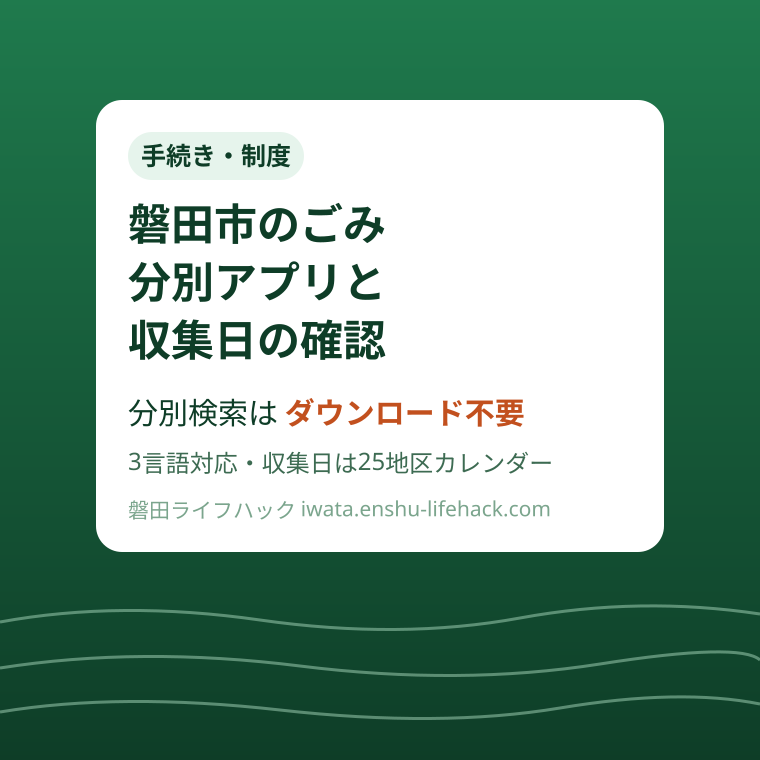

手続き・制度
磐田市のごみ分別アプリ「しっぺいのゴミチェッカー」と収集日の確認方法｜ダウンロード不要・3言語対応

この記事の要点
Q. 磐田市のごみの分別と収集日は、スマホでどう確認するの？
A. 分別は、ダウンロード不要のごみ分別サイト「しっぺいのゴミチェッカー」で品名から検索でき、収集日も同じサイトで確認できます。あわせて、地区別（全25地区）の令和8年度収集カレンダーPDFと、磐田市公式LINEの収集日通知（前日19時・当日7時など）も使えます。
導入——「これ、何ごみ？」と「明日は何の日？」を、その場で解く
ごみの困りごとは、たいてい二つに集約されます。一つは「この品目はどの区分か」という分別の迷い、もう一つは「自分の地区の収集日はいつか」という日付の迷いです。磐田市では家庭ごみを9種類に分別し、収集日は地域別・ごみの種類別に異なるため、この二つの迷いは毎週のように繰り返し訪れます。
この記事は、その二つの迷いをスマホで解くための公式ツールを整理した案内です。中心になるのは、ごみ分別サイト「しっぺいのゴミチェッカー」です。粗大ごみの申し込み手順は以前の記事で扱いましたが、今回は日常の分別検索と収集日の確認に絞ります。
根拠にするのは、磐田市公式ページ「ごみ分別サイト『しっぺいのゴミチェッカー』」（ページ番号1001444、2025年3月27日更新）です。あわせて「令和8年度家庭ごみ収集カレンダー」（ページ番号1010512、2026年4月24日更新）、「家庭ごみ分別ガイドブック」（ページ番号1001445、2026年4月15日更新）、「家庭ごみ収集日をLINEでお知らせします」（ページ番号1011843）も確認しました。
先に結論を書きます。ゴミチェッカーは、アプリストアから入れるタイプのアプリではなく、ダウンロード不要でブラウザから使うごみ分別サイトです。スマートフォンやタブレット端末、パソコン等で利用でき、分別検索はポルトガル語・英語・ベトナム語にも対応しています。収集日の確認は、このサイトに加えて、地区別のカレンダーPDFと公式LINEの通知という、性格の違う三つの手段が用意されています。
令和8年4月からは、プラスチックの出し方も変わりました。プラマークのない製品プラスチックも、条件を満たせばプラスチック資源として出せるようになっています。分別の境界が動いた年だからこそ、「昔の覚え方」で出すのではなく、その都度検索して確認する習慣の価値が上がっています。
まず、公式資料から事実を整理する——ゴミチェッカーとは何か
市の説明では、ゴミチェッカーは、静岡産業大学と磐田市の包括連携に関する協定に基づく取り組みで、静岡産業大学の学生が中心となり、市と共同で製作した「ダウンロード不要のアプリ」です。大学と市が一緒に作った地域密着のツールで、市のマスコットにちなんだ「しっぺい」の名前が付いています。
主な機能は三つです。第一に分別検索機能で、品名からどの区分で出すかを調べられます。第二に収集日確認で、お住まいの地区の収集日を確認できます。第三に市からの情報で、ごみ減量・リサイクル啓発事項の紹介、ごみ処理施設の案内、イベント紹介、補助制度の案内、よくある質問Q&Aなどが掲載されています。
対応する端末は、スマートフォンやタブレット端末、パソコン等とされています。アプリストアで機種ごとのアプリを探す必要はなく、市の公式ページから外部リンクでアクセスする形です。市のページには、アプリのアイコンをスマートフォン・タブレット端末のホーム画面に作成する方法（PDF）も用意されていて、ホーム画面に置けば通常のアプリと同じ感覚で開けます。
言語対応は、分別検索機能がポルトガル語、英語、ベトナム語にも対応している点が特徴です。磐田市には外国籍の住民も多く、分別ルールは言語の壁がそのまま出し間違いにつながりやすい分野です。家族や同僚に外国語で暮らす人がいる場合、この検索を教えてあげるだけでも、集積所のトラブルは減らせます。

分別の土台になるルールも、ガイドブックのページで押さえておきます。家庭ごみは9種類に分別して出し、市の指定の袋または収集券で出します。可燃ごみ専用は緑色、不燃ごみ専用は無色透明の指定袋です。ごみ袋・収集券には地区名と氏名等の記載を市がお願いしていて、記載方法は自治会によって定められている場合があります。
なお、ガイドブックには令和8年4月1日現在の掲載内容の訂正も出ています。可燃ごみのページでは、カセットテープ・ビデオテープの扱いについて「ケースを含む」としていた表記が訂正され、ケースは材質ごとに分別が異なるとされました。こうした細部の更新があるからこそ、古い印刷物だけに頼らず、検索で最新を確認する意味があります。
収集日カレンダー——25地区に分かれたPDFの見方
収集日のもう一つの公式な確認先が、「令和8年度家庭ごみ収集カレンダー」のページです。令和8年度の各地区別のカレンダーをPDFでダウンロードして見られます。カレンダーは地区ごとに分かれていて、番号は1から25まで、全25地区分が用意されています。
地区の内訳は、磐田地域が1から8、福田地域が9から14、竜洋地域が15から17、豊田地域が18から23、豊岡地域が24と25です。各PDFには対象自治会名が明記されているので、自分の自治会名がどの番号に入っているかを先に確認するのが、迷わないための第一歩です。各PDFの容量は1.3MBと案内されています。
カレンダーの使い方で市が強調しているのは時間です。お住まいの地区のカレンダーで収集日を確認し、午前8時までに出してください、とされています。ただし、自治会によってはごみを出す時間が別に決められている場合があるため、必ず自治会に確認してください、とも書かれています。市の8時という基準と、自治会の独自ルールの両方を見る必要があります。
カレンダーPDFは、印刷して冷蔵庫に貼る使い方と相性がよい資料です。ゴミチェッカーが「今すぐ調べる」道具だとすれば、カレンダーは「家の定位置で見返す」道具です。年度が替われば新しい年度版に差し替える必要があるので、令和8年度版であることを表紙で確認してから使ってください。
転入・転居で集積所の場所自体が分からない場合は、話が別です。ガイドブックのページでは、ごみ集積所の場所がわからない場合は自治会や管理会社等へ問い合わせるよう案内されています。収集日はカレンダーで分かっても、出す場所は地域の案内がなければ分かりません。この順番を間違えないことが、転入直後のつまずきを防ぎます。
第三の確認方法——公式LINEの収集日通知
確認方法はもう一つあります。磐田市公式LINEアカウントのメニューに「家庭ごみ」が追加されていて、家庭ごみ収集日のお知らせを定期配信する仕組みです。「お住まいの地域」「ごみの種類」「配信時間」の設定を行うと、LINEアプリに収集日のお知らせ通知が届きます。
配信時間は、前日19時、当日7時など設定できると案内されています。前日の夜に知れば袋にまとめる時間を取れ、当日の朝に知れば出す前の最終確認になります。自分の生活リズムに合わせて選べる点が、カレンダーや検索にはない通知ならではの強みです。

さらに、「家庭ごみ」メニューの中には「ごみ分別検索」も設定されていて、家庭で分別に困ったときに、LINEの中からそのまま分別を調べられます。通知で収集日を知り、迷ったら同じ場所で検索する、という動線が一つのアプリの中で完結します。
三つの手段の使い分けを整理します。分別に迷ったときはゴミチェッカーの検索、年間の収集日を一覧で見たいときは地区別カレンダーPDF、出し忘れを防ぎたいときはLINE通知です。どれか一つでなければならないわけではなく、検索と通知を組み合わせるのが実務的です。
磐田の暮らしに置き換える——引っ越し直後と、家族の分担
引っ越し直後は、この三つの手段を一度にそろえるのが効率的です。転入の手続きのついでに、自治会で集積所の場所と出す時間の決まりを確認し、自分の地区番号のカレンダーPDFを保存し、ゴミチェッカーをホーム画面に置き、LINEの通知を設定する。ここまでを引っ越しの週のうちに終えれば、ごみの迷いはほぼ仕組みで解けます。
家族でごみ出しを分担している家庭では、通知の共有が効きます。LINE通知は設定した本人の端末に届くため、担当が替わる家庭では、カレンダーPDFを印刷して共有の場所に貼る方法が今も有効です。検索は誰のスマホでも開けるので、「分からない品目は各自が検索してから袋に入れる」という家庭内ルールにすると、出し間違いが減ります。
令和8年4月からのプラスチックの変更は、長く磐田で暮らす人ほど影響します。市の「プラスチック資源の出し方」によれば、プラマークのない製品プラスチックは、プラスチックだけでできていること、50cm未満の大きさで厚さ5mm未満であること、汚れがついていないことの三つをすべて満たせば、プラスチックとして出せます。覚え直しが必要な変更なので、迷う品目ほど検索で確かめる価値があります。
問い合わせ先も覚えておくと安心です。担当はごみ資源循環課資源循環推進グループ（電話0538-37-4812、磐田市刑部島301、受付時間は午前8時30分から午後5時15分）です。検索でもカレンダーでも判断がつかない品目は、最終的にはここに聞くのが確実です。
評価——良い点と、注文したい点
良い点は、ゴミチェッカーがダウンロード不要で、端末を選ばずにすぐ使えることです。アプリストアのアカウントや空き容量を気にせず、市のページから開いてその場で検索できます。ホーム画面へのアイコン作成方法まで市が案内しているため、日常使いの導線も用意されています。
良い点はもう一つ、確認方法が三層になっていることです。検索、カレンダーPDF、LINE通知と、調べる・見返す・知らせてもらうという性格の違う手段がそろっていて、生活スタイルに合わせて選べます。分別検索が3言語に対応している点も、地域の実情に合った設計です。
注文したい点は、ゴミチェッカーの存在が、市のごみページを行き来しないと見つけにくいことです。分別ガイドブック、カレンダー、LINE通知、ゴミチェッカーと案内ページが分かれているため、初めて調べる人は「結局どれを開けばいいのか」で一度迷います。入り口を一枚にまとめた案内があると、転入者にはもっと優しくなります。
注文したい点はもう一つ、カレンダーPDFが地区番号と自治会名で分かれているため、自分の自治会名を正確に知らないと選べないことです。住所から地区番号を引ける案内がカレンダーのページに添えられていれば、引っ越してきたばかりの人でも迷わずに自分のPDFへたどり着けます。
対案・結論——「検索・カレンダー・通知」をそろえて迷いを仕組みで消す
対案・結論として、磐田のごみの確認は、この三つをそろえることでほぼ完結します。品目の分別はゴミチェッカーで検索する。年間の収集日は自分の地区のカレンダーPDFで見返す。出し忘れは公式LINEの通知で防ぐ。この組み合わせを一度作れば、あとは年度替わりのカレンダー差し替えだけが定期作業になります。
始める順番も決めておきます。最初にゴミチェッカーをホーム画面に置く。次に自分の自治会名から地区番号を確認してカレンダーPDFを保存する。最後にLINEで地域・種類・配信時間を設定する。どれも費用はかからず、市の公式ページからたどれるものばかりです。
分別の判断に迷ったときの原則は一つです。自己判断で近い区分に入れるのではなく、検索するか、ごみ資源循環課（0538-37-4812）に確認するか、どちらかを選ぶ。令和8年4月のプラスチックの変更のように、ルールは少しずつ動いているため、「たぶん」で出す習慣がいちばんのリスクです。
確認する順番
- 磐田市公式ページ「ごみ分別サイト『しっぺいのゴミチェッカー』」からゴミチェッカーを開き、ホーム画面にアイコンを作成する（ダウンロード不要・スマホ・タブレット・パソコン対応）
- 分別に迷う品目は、ゴミチェッカーの分別検索で品名から区分を確認する（ポルトガル語・英語・ベトナム語にも対応）
- 「令和8年度家庭ごみ収集カレンダー」で自分の自治会名から地区番号（全25地区）を確認し、地区別PDFを保存・印刷する。出す時間は午前8時までが基準で、自治会の決まりもあわせて確認する
- 磐田市公式LINEの「家庭ごみ」メニューで、お住まいの地域・ごみの種類・配信時間（前日19時・当日7時など）を設定する
- 検索でも判断できない品目は、ごみ資源循環課資源循環推進グループ（0538-37-4812）へ問い合わせる
家族で共有するための記録
カレンダーPDFは、ファイル名に地区番号と自治会名を入れて保存しておくと、家族で共有するときに取り違えません。隣の地区と収集日が違うことは珍しくないため、「磐田市のカレンダー」という名前のまま共有すると、誤った日付が広がる元になります。
検索で確認した品目の結果は、家庭内のメモに残すのがおすすめです。よく出すのに迷いやすい品目、たとえば材質が分かれるケース類のような品目は、一度調べて結果を冷蔵庫のメモに書いておけば、次からは検索なしで正しく出せます。
年度替わりには、カレンダーPDFの差し替えと、ガイドブックの訂正情報の確認をセットで行ってください。令和8年度版にも訂正が出ているように、印刷物と公式ページの情報には差が生まれます。3月から4月の切り替え時期に一度見直す習慣が、出し間違いを防ぎます。
大石の視点
大石の視点として、ゴミチェッカーで印象的なのは、作り手が静岡産業大学の学生を中心とした市との共同製作であることです。行政のツールは「正確だが開かれない」ことが少なくありませんが、日常の分別という最も頻度の高い場面で、若い作り手の感覚が入った検索の仕組みがあるのは、磐田の暮らしにとって実質的な財産だと思います。
不動産の現場で転入する方をご案内すると、ごみの出し方は、住所変更の手続きと同じくらい早い段階で聞かれる質問です。集積所の場所、収集日、分別の三つが分からないまま最初の週を迎えると、それだけで新生活の負担になります。転入の案内の場面で、ゴミチェッカーとカレンダーとLINE通知を一式として渡せるかどうかが、地域への定着のしやすさを左右すると感じます。
まとめ
磐田市のごみ分別は、ダウンロード不要の「しっぺいのゴミチェッカー」で品名から検索でき、収集日も同じサイトで確認できます。収集日の確認は、全25地区の令和8年度カレンダーPDFと、公式LINEの収集日通知（前日19時・当日7時など）もあわせて使えます。出すときの基本は、収集日の午前8時までに、決められた集積所へ、市の指定袋または収集券で出すことです。
- しっぺいのゴミチェッカーはダウンロード不要で、スマホ・タブレット・パソコンから利用可能。分別検索はポルトガル語・英語・ベトナム語にも対応し、収集日確認と市からの情報も見られる
- 収集カレンダーは令和8年度版が全25地区（磐田1〜8・福田9〜14・竜洋15〜17・豊田18〜23・豊岡24・25）のPDFで公開され、自分の自治会名から地区を選ぶ
- 公式LINEの「家庭ごみ」メニューでは、地域・種類・配信時間を設定すると収集日の通知が届き、分別検索もメニュー内にある
- 出すときの基本は収集日の午前8時まで（自治会で時間が決められている場合はそれに従う）。集積所の場所が分からない場合は自治会や管理会社へ確認する
参考にした公式情報
- ごみ分別サイト「しっぺいのゴミチェッカー」／磐田市（ページ番号1001444、2025年3月27日更新、2026年11月16日確認）
- 令和8年度家庭ごみ収集カレンダー／磐田市（ページ番号1010512、2026年4月24日更新、2026年11月16日確認）
- 家庭ごみ分別ガイドブック／磐田市（ページ番号1001445、2026年4月15日更新、2026年11月16日確認）
- 家庭ごみ収集日をLINEでお知らせします／磐田市（ページ番号1011843、2023年2月8日更新、2026年11月16日確認）
- プラスチック資源の出し方／磐田市（ページ番号1015430、2026年8月4日更新、2026年11月16日確認）
最終確認日：2026-11-16 ／ 本記事は公表情報と執筆者の見解を分けて記載しています。制度・数値・公開状況は変更される場合があるため、最新情報は磐田市公式ページでご確認ください。